Week 1 · Topic 1
Anatomy & Physiology
External Genitalia (Vulva)
| Structure | Function / Clinical Note |
|---|---|
| Mons pubis | Protects the pelvic bones |
| Labia majora | Protect the underlying tissues |
| Labia minora | Lubricate vulvar skin; secrete a bactericidal fluid |
| Clitoris | Female erectile tissue |
| Urethral meatus | Urine outlet — when catheterizing a pregnant patient, aim high and lift the labia to visualize it (tissue is more swollen/congested) |
| Skene's glands | Paraurethral glands that lubricate the vaginal opening |
| Hymen | Thin tissue around the vaginal opening — can be stretched/torn by tampons, exercise, etc., not only intercourse |
| Perineal body | Stretches during delivery; common site of episiotomy/laceration |
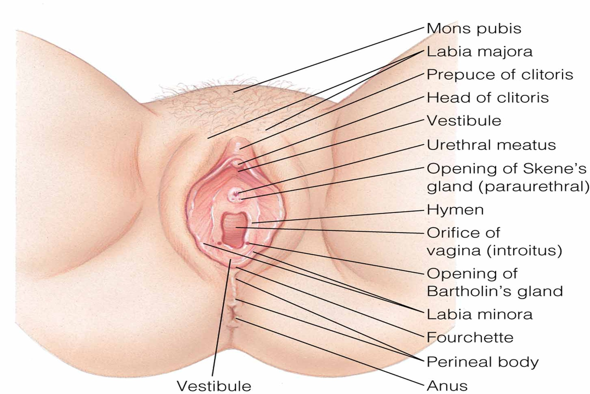
Internal Genitalia
| Structure | Function / Clinical Note |
|---|---|
| Vagina | Muscular tube connecting external genitals to uterus — the birth canal |
| Fundus | Rounded upper portion of the uterus; massaged postpartum to control bleeding |
| Cervix (internal/external os) | Internal os is closest to the uterus, external os closest to the vagina — both thin during effacement |
| Endometrium | Inner uterine lining — site of implantation |
| Myometrium | Muscle layer of the uterus |
| Perimetrium | Outer layer of the uterus |
| Fornices (ant./post.) | Space around the cervix that allows semen to pool, aiding sperm transport |
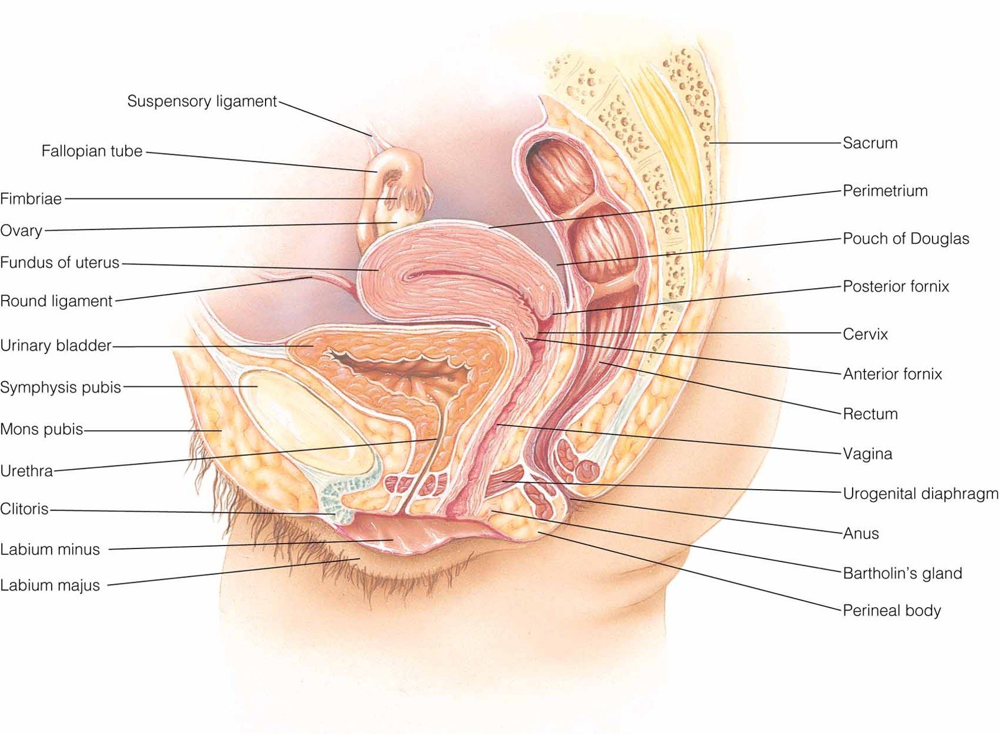
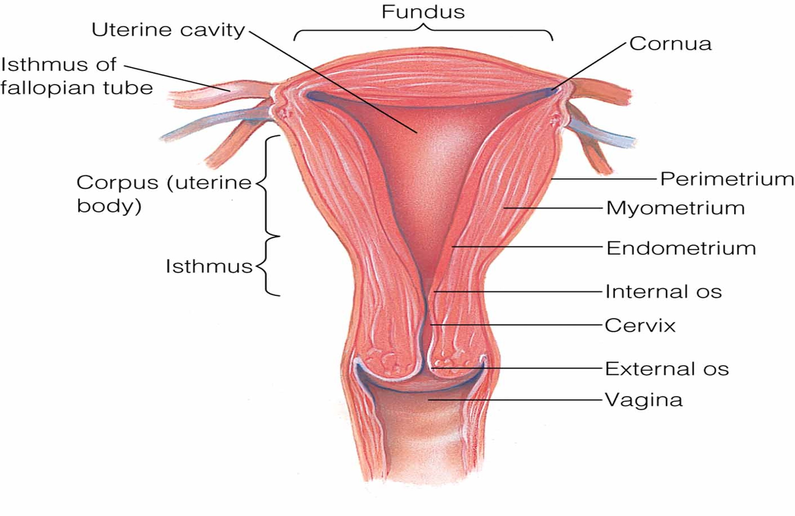
Uterine Ligaments
| Ligament | Function |
|---|---|
| Broad ligament | Sheath over the pelvic cavity; provides stability, keeps uterus centrally placed |
| Round ligament | Pulls the uterus down and forward, helping the presenting part enter the cervix — source of round ligament pain in pregnancy |
| Cardinal ligament | Chief uterine support — helps prevent uterine prolapse |
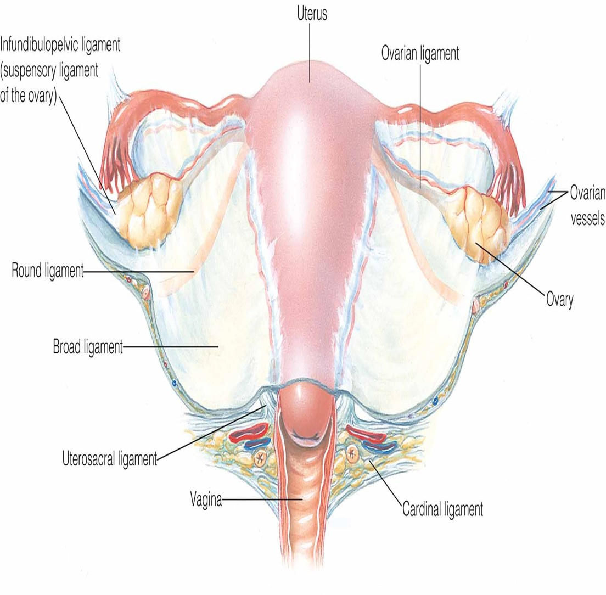
Fallopian Tubes & Ovaries
| Structure | Function |
|---|---|
| Isthmus | Connects the fallopian tube to the uterus — site of tubal ligation |
| Ampulla | Usual site of fertilization |
| Fimbriae | Finger-like projections that sweep the released egg into the tube |
| Ovaries | Hold all eggs a woman will ever have (present at birth); primary source of estrogen/progesterone until the placenta takes over progesterone production around week 7; the ovaries resume control after delivery |
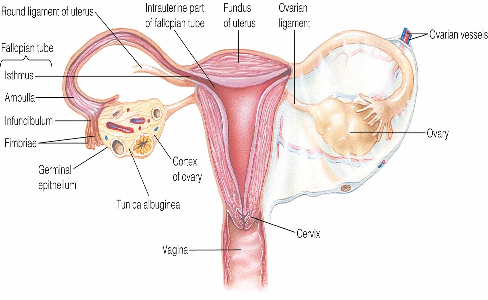
Bony Pelvis
| Region | Role |
|---|---|
| False pelvis | Supports the weight of the enlarging uterus; directs fetus toward the true pelvis |
| True pelvis | Must be adequate in size for vaginal delivery — inadequate size is cephalopelvic disproportion (CPD) |
| Pelvic inlet / outlet | Inlet diameter determines engagement; outlet determines whether the baby can pass under the pubic arch (outlet/shoulder dystocia if not) |
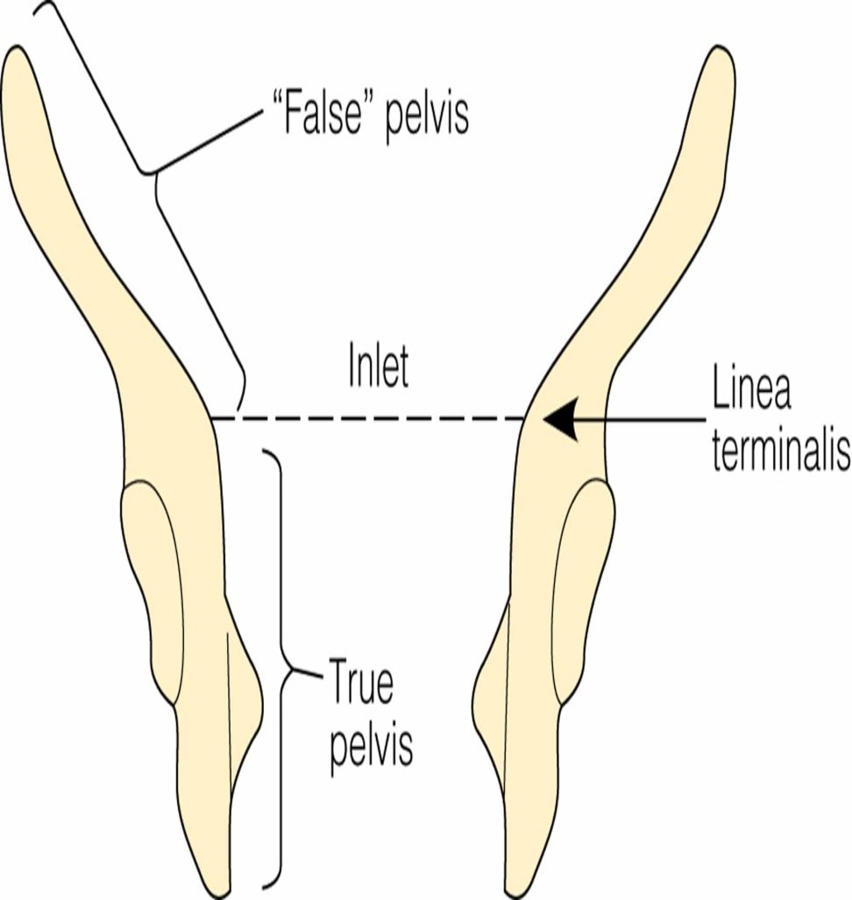
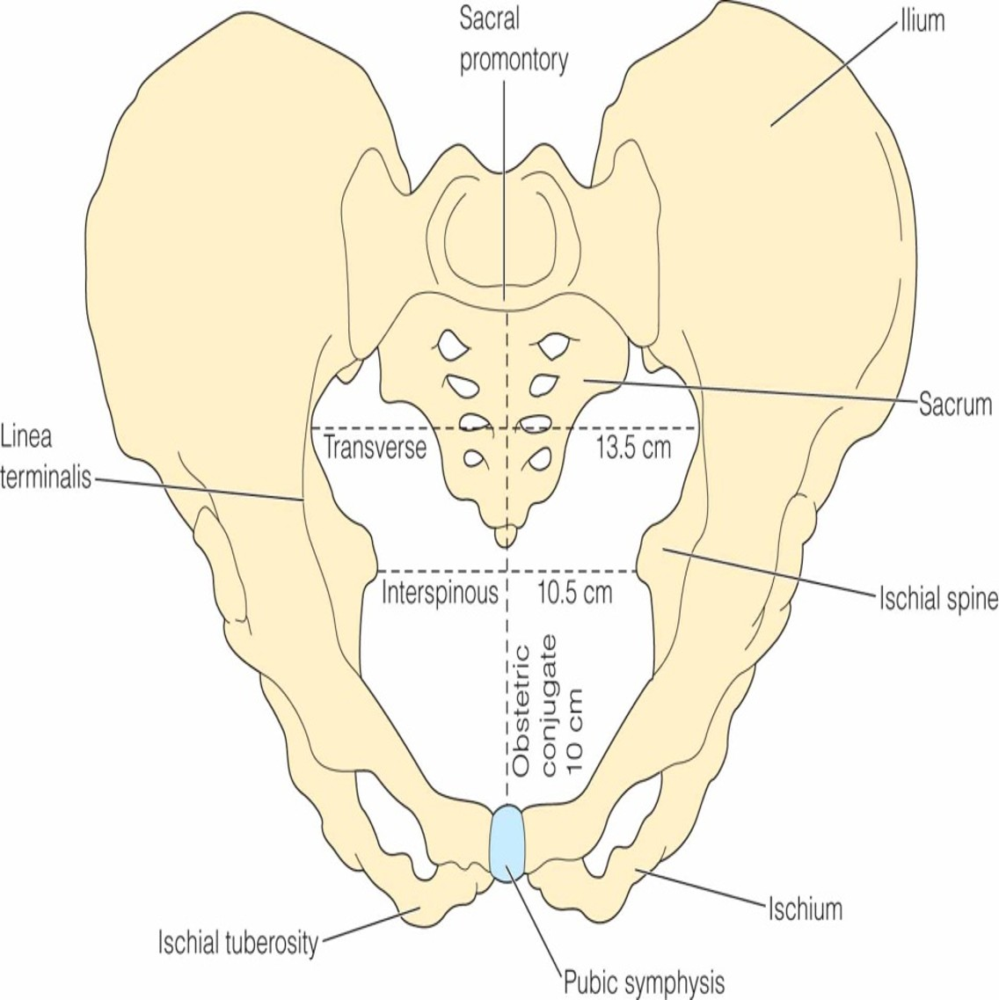
Female Hormones
| Hormone | Function |
|---|---|
| Estrogen | Female secondary sex characteristics: breast development, hip widening, uterine growth, increased body hair, sexual desire |
| Progesterone | Stabilizes uterus for implantation, thickens cervical mucus, supports lactation and breast glandular tissue |
| Prostaglandins | Fatty acids that relax/constrict smooth muscle — relevant to labor induction and increasing contractions |
| FSH | Follicle-stimulating hormone — matures the egg follicle |
| LH | Luteinizing hormone — triggers ovulation; decreases estrogen while allowing progesterone secretion to continue |
Menstrual / Ovarian Cycle (~28-Day Average)
Two processes run in parallel — the ovarian cycle (egg maturation) and the uterine cycle (endometrial preparation).
| Phase | What's Happening |
|---|---|
| Follicular | Immature egg matures under FSH; ends in ovulation (day 13–15, most fertile window) |
| Luteal | Egg travels to the ampulla; if fertilized, implants ~3–4 days later and begins secreting hCG. Egg is only fertile 12–24 hrs. |
| Menstrual | Endometrial shedding/bleeding, typically 2–8 days |
| Proliferative | Endometrium thickens under rising estrogen; cervical mucus becomes clear/elastic, favorable for sperm |
| Secretory | Follows ovulation — progesterone causes marked vascular swelling to build a nourishing implantation bed |
| Ischemic | If no implantation, estrogen/progesterone drop, corpus luteum degenerates → menstrual phase begins |
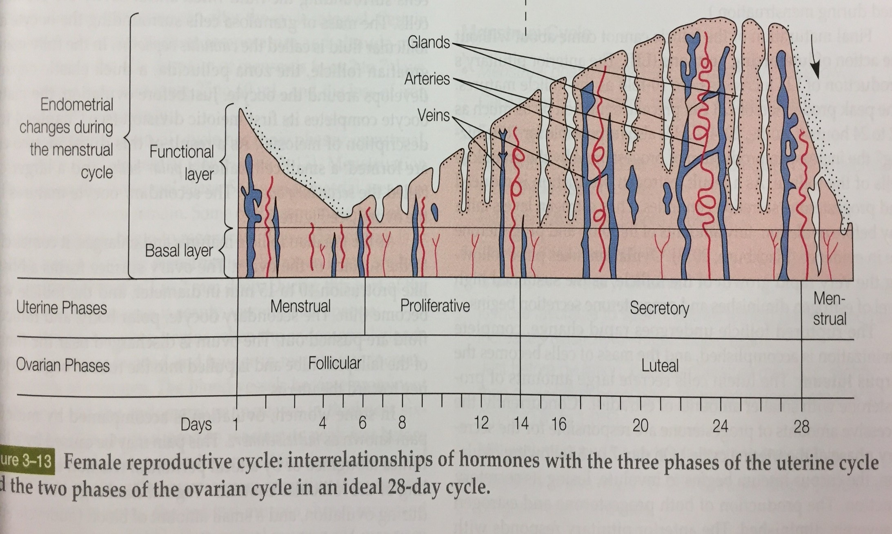
Male Reproductive System
| Structure | Function |
|---|---|
| Penis | Contains the urethra; external organ |
| Scrotum | Houses the testes; keeps sperm temperature below core body temp |
| Testes | Site of sperm production; secrete testosterone |
| Epididymis | Sperm reservoir, sits behind each testis |
| Vas deferens & ejaculatory duct | Connect the epididymis to the prostate for sperm passage |
| Seminal vesicles | Secrete alkaline fluid that aids sperm motility and metabolism |
| Prostate gland | Encircles the urethra; secretes fluid that protects sperm from the acidic vaginal environment |
| Urethra | Shared pathway — sperm and urine are not released simultaneously if the ejaculatory duct is functioning normally |
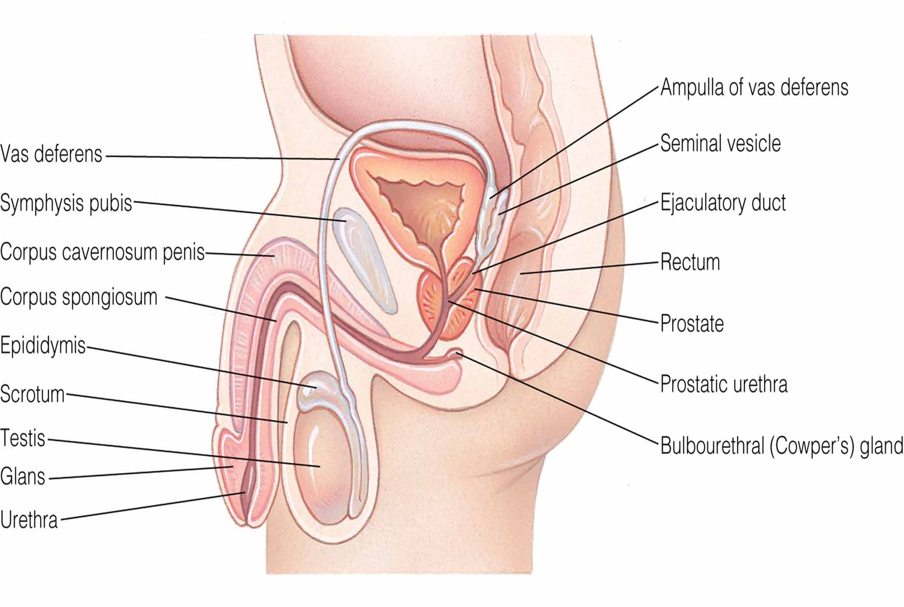
Sperm head carries all genetic material; the tail provides motility. Sperm remain viable 48–72 hrs (most fertile ~24 hrs). Undescended testes at birth are not a fertility concern as long as they descend (spontaneously or surgically) before sperm production begins at puberty.
Mitosis vs. Meiosis
Mitosis
- Growth and tissue repair
- Produces exact copies of original cells
- Full chromosome number retained
Meiosis (gametogenesis)
- Produces eggs and sperm
- Cells contain only half the genetic material
- Oogenesis: complete at birth (female)
- Spermatogenesis: begins at puberty (male)
Fertilization: 23 (maternal) + 23 (paternal) alleles = 46 chromosomes. Sex chromosomes: XX = female, XY = male. Fertilization typically occurs in the ampulla; only one sperm is meant to enter the egg.
Twins
Fraternal (Dizygotic)
Two eggs, two sperm, two separate blastocysts. Share only uterine space — can be any sex combination. Two placentas, two chorions, two amnions.
Identical (Monozygotic)
One egg + one sperm → one blastocyst that later divides. Always same sex. How much they share depends on when the division occurs.
Confirming on Ultrasound
One boy + one girl = definitely fraternal. Two of the same sex = could be either fraternal or identical.
Identical Twin Subtypes — By Timing of Blastocyst Division
| Type | Division Timing | Chorions | Amnions | Risk |
|---|---|---|---|---|
| Dichorionic-Diamniotic (Di-Di) | ~3 days | 2 | 2 | Lowest risk (separate or fused placentas) |
| Monochorionic-Diamniotic (Mono-Di) | ~5 days | 1 (shared) | 2 | Higher risk — shared chorion |
| Monochorionic-Monoamniotic (Mono-Mono) | 8–12 days | 1 (shared) | 1 (shared) | Highest risk — share the same amniotic sac; risk of cord entanglement |
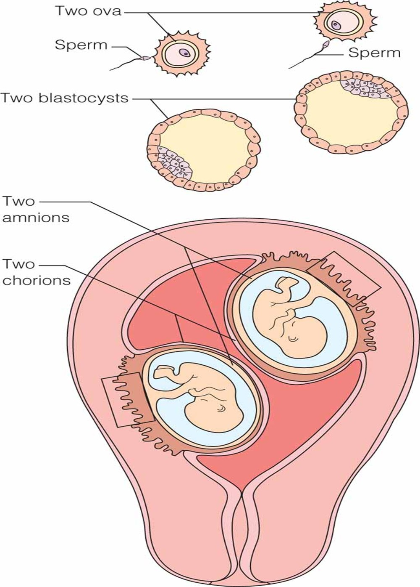
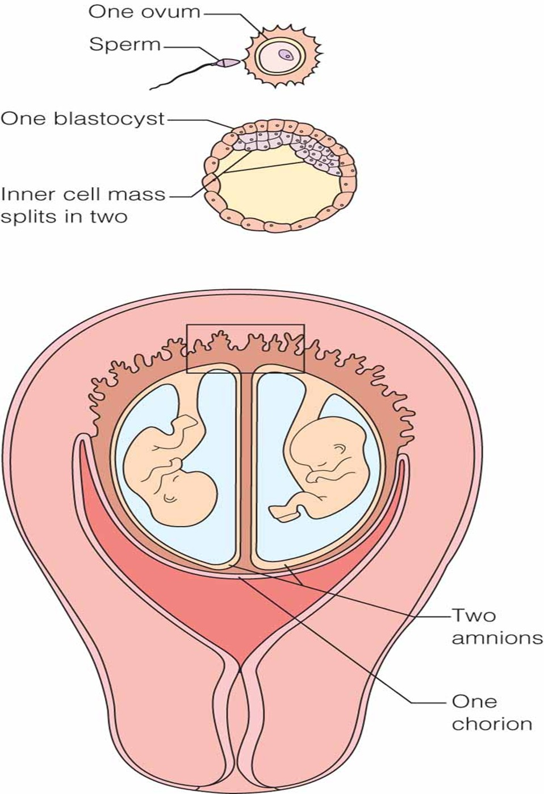
Amniotic Fluid, Cord & Placenta
| Condition | Definition | Common Causes |
|---|---|---|
| Polyhydramnios | > 2,000 mL fluid | Multiple gestation, maternal diabetes (fetal polyuria from hyperglycemia), fetal GI/swallowing problems |
| Oligohydramnios | < 500 mL fluid, or AFI < 5 (normal AFI 5–25 cm) | Maternal perfusion issues (e.g., hypertension), fetal kidney problems, bladder obstruction |
Umbilical cord: 2 arteries (carry waste away) + 1 vein (delivers oxygenated blood) surrounded by Wharton's jelly; no pain receptors, so cutting it doesn't hurt mom or baby. Placenta: provides immune protection, excretion, respiration, nutrient transfer, and hormone production (hCG). "Dirty Duncan" side = maternal/attached to uterus; "shiny" side = fetal-facing.
Fetal Development Timeline
Heart begins to beat (often before the mother knows she's pregnant); arm/leg buds, vertebrae, lung buds present; eyes/ears forming
Body straightens, trachea develops, liver produces blood cells, blood begins circulating, digits developing
Face more developed, eyelids closed, tooth buds appear, genitals differentiated, urine produced, spontaneous movement begins (not yet felt by mom)
Halfway point. Subcutaneous brown fat, vernix, and lanugo form; nipples and nails present; most mothers begin feeling fetal movement (quickening); FHTs audible by fetoscope
Eyes structurally complete, alveoli begin forming, grasp/startle reflexes and fingerprints/footprints present — chance of survival if born now
Rapid brain development, eyelids open, testes begin descending, improved gas exchange
Increasing subcutaneous fat, lanugo disappearing, 4 weeks from term
Smooth/polished skin, vernix remains mainly in creases, head larger than chest
Self-Test Flashcards
Click a card to flip it and check your answer.